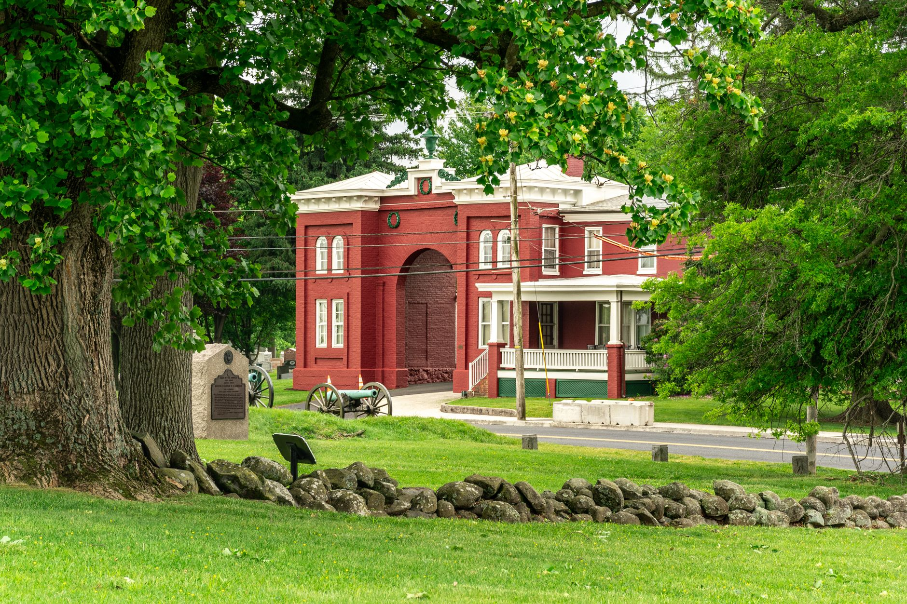
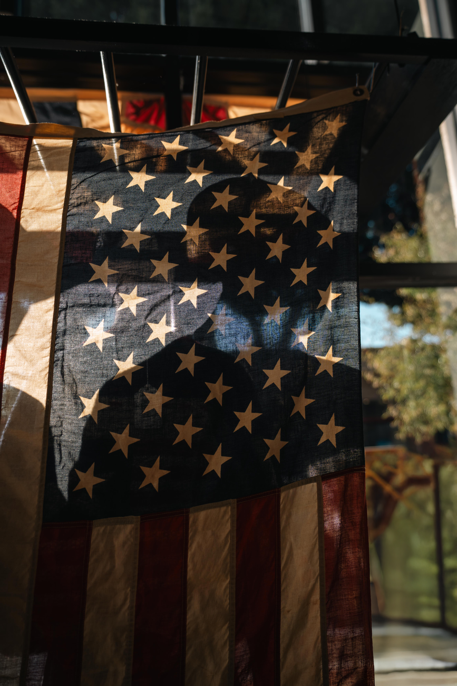

Season 1, Episode 11 — Appomattox, April 9, 1865

Grant and Lee met only twice in their lives. The first time was in Mexico — Grant was a young quartermaster, Lee was on Winfield Scott's staff. The second time was at Appomattox — where Grant accepted Lee's surrender. Two meetings, 18 years apart, on opposite sides of history.
April 1865. After the fall of Petersburg and Richmond, Lee's Army of Northern Virginia is retreating west — ragged, starving, outnumbered 2-to-1. Grant's army pursues relentlessly for a week. Lee hopes to reach Lynchburg where supply trains are waiting.
On April 7, Grant sends a note suggesting surrender. Lee stalls: he wants to know the terms. Over the next two days, the armies skirmish as Lee tries to break free. On April 9 — Palm Sunday — Lee realizes he is surrounded at Appomattox Court House. His cavalry cannot break through. His infantry has no food. He says: "There is nothing left for me to do but go and see General Grant, and I would rather die a thousand deaths."
Lee arrives first — wearing his finest uniform, a ceremonial sword at his side, polished boots. Grant arrives 30 minutes later — in a muddy private's coat, no sidearm, his boots caked with mud. The contrast was deliberate. Grant wrote later that he didn't want to humiliate Lee by arriving in full dress uniform.
They shook hands. Grant later wrote that he remembered Lee from the Mexican War and thought "I had known him and, in fact, had met him at that time."
Grant's terms were generous — he wanted to prevent a guerrilla war:

Grant's generosity at Appomattox — officers keep sidearms, men keep their horses
Lee asked his men to lay down their arms and go home. He said: "After four years of arduous service, marked by unsurpassed courage and fortitude, the Army of Northern Virginia has been compelled to yield to overwhelming numbers and resources."
James Longstreet was also at Appomattox — Lee's senior corps commander. After the surrender, Longstreet and Grant met face to face for the first time since the war began. They had been friends. Longstreet was best man at Grant's wedding. Now Longstreet was surrendering.
Grant treated Longstreet with warmth and respect. Years later, Grant put Longstreet's name on a personal pardon list — even though Longstreet refused to ask for one. Longstreet wrote: "The friendship formed at West Point was renewed and continued."
Lee returned to Richmond a defeated man. He never wore his Confederate uniform again. He became president of Washington College (later Washington and Lee University). He was never charged with treason — Grant's terms protected him. Lee died in 1870, five years after the war.
Grant went on to become president of the United States. He died in 1885, having finished his memoirs just days before.
First: in Mexico (1847) — Grant was a quartermaster, Lee was on Scott's staff. Second: at Appomattox (1865) — the surrender. Jeopardy loves "only/both" structures. If a clue asks when they met before Appomattox, the answer is Mexico.
How this works: Work through each phase in order. Don't scroll ahead to the answers.
Cover the answers below. For each clue, respond in the form of "Who is…" or "What is…". Answers are at the bottom of this page.
Phase 1 (Fill-in-the-Blank):
Phase 2 (Core Jeopardy):
Phase 3 (Previously On… — Modules 8–10):
In Module 12: Epilogue — Reconciliation, Longstreet becomes a Republican. Post-war reunions. The legacy of the West Point bond.
Jay Winik's April 1865: The Month That Saved America — the best account of the Appomattox surrender and its context. Also Grant's own Personal Memoirs for his account of the meeting.
Have a question about Appomattox? Want to dig deeper into the surrender terms, the Longstreet-Grant friendship, or the two meetings between Grant and Lee? Just ask — I'm your teacher.